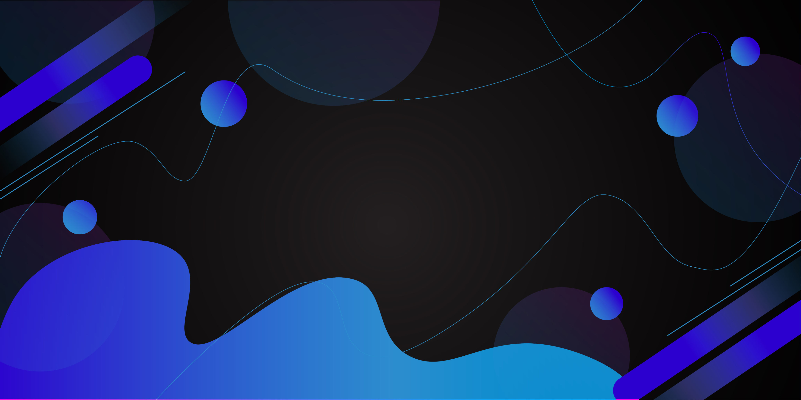

აღმოაჩინე ტექნოლოგიების სამყარო
თანამედროვე ტექნოლოგიები და ინოვაციები ერთ სივრცეში
ბოლო სიახლეები
ხელოვნური ინტელექტის მომავალი 2026 წელს
გაეცანით უახლეს ტენდენციებს AI-ის სფეროში და რა ცვლილებებს მოგვიტანს ახალი წელი. ექსპერტები აანალიზებენ ტექნოლოგიის განვითარების ძირითად მიმართულებებს.
Web Development-ის ახალი სტანდარტები
როგორ იცვლება ვებ დეველოპმენტი 2026 წელს. განვიხილოთ ახალი ფრეიმვორკები, ინსტრუმენტები და საუკეთესო პრაქტიკები თანამედროვე ვებ აპლიკაციების შესაქმნელად.
კიბერუსაფრთხოება დღევანდელ სამყაროში
თანამედროვე საფრთხეები და დაცვის მეთოდები. როგორ დავიცვათ ჩვენი მონაცემები და რა პრევენციული ზომები უნდა მივიღოთ ონლაინ სივრცეში. რა პრევენციული ზომები უნდა.
Cloud Computing-ის ახალი ეპოქა
ღრუბლოვანი ტექნოლოგიების განვითარება და მათი გამოყენების პერსპექტივები. რა შესაძლებლობებს გვთავაზობს თანამედროვე ღრუბლოვანი პლატფორმები.
მობილური აპლიკაციების დიზაინი
UX/UI დიზაინის თანამედროვე ტენდენციები მობილური აპლიკაციებისთვის. როგორ შევქმნათ მომხმარებლისთვის მოსახერხებელი და მიმზიდველი ინტერფეისი.
Blockchain და კრიპტოვალუტები
Blockchain ტექნოლოგიის გამოყენების სფეროები და კრიპტოვალუტების მომავალი. ანალიზი და პროგნოზები ექსპერტებისგან ციფრული ფინანსების შესახებ.